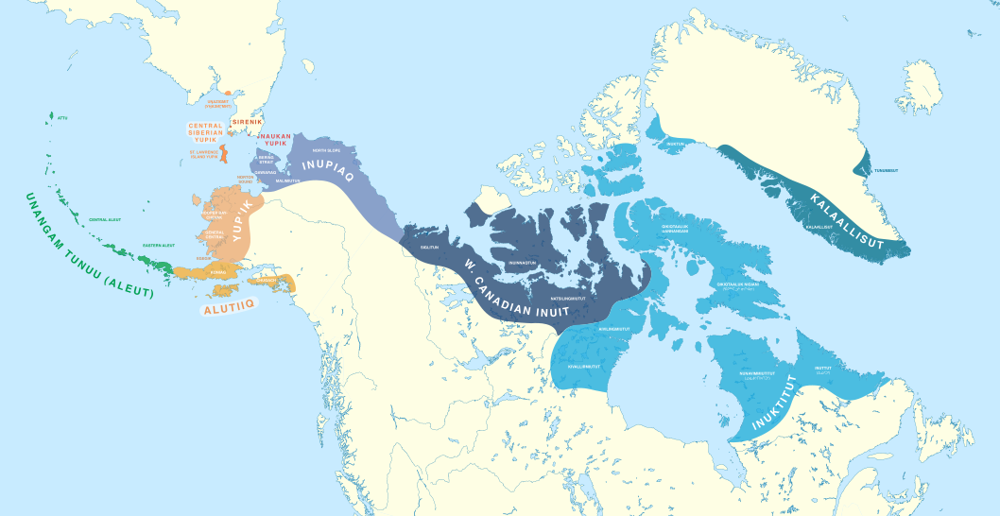

online
ainu
akadyjski
angielski
celtyckie
czeski
eskimo-aleuckie

mapa języków eskimo-aleuckich [źródło: w.wiki/Hm$o]
esperanto
estoński
fiński
germańskie
gocki
grecki (nowy)
grecki (stary)
herbajski
islandzki
japoński
japońskie
kaszubski
kirgiski
koreański
lapońskie
łacina
maltański
maori
maryjski
mongolski
niemiecki
niderlandzki
perski
polski
pragermański
rosyjski
sanskryt
słowacki
suahili
staronordyjski
sztuczne
tolkienowskie
turecki
ukraiński
uralskie
włoski
blogi
MAKE BLOGS GREAT AGAIN
czasopisma
youtube
różne